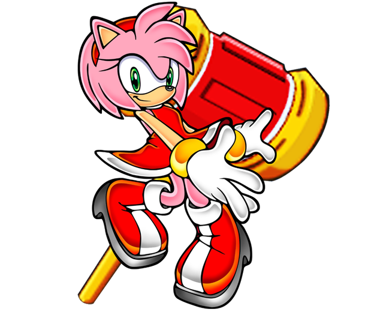

Sonic the Hedgehog
Sonic is a blue, anthropomorphic hedgehog born with the ability to run faster than the speed of sound. As his species implies, Sonic can also roll up into a concussive ball to attack enemies. He's confident, fearless, and always up for an adventure. He's known for his smug attitude and quick wit, often teasing his enemies while zooming past them. He was born on Christmas Island on June 23rd, 1991. He abandoned his home at an early age to pursue danger and adventures.
Sonic's birthplace, Christmas Island, is based on an actual island called Kiritimati. This island was used for nuclear weapons testing by the US and UK during the Cold War. This is why in Sonic's universe is full of robots and weird animals.
Sonic has spent most of his life travelling around the world and far beyond. He uses his abilities to defend the world from the forces of evil, especially his arch nemises Dr Eggman. Despite his recklessness, Sonic has a big heart and fights for justice no matter what. He's super loyal to his pals and will do whatever it takes to save the day.
Sonic has varius powerfult transformations:
Super Sonic: Achieved by using the Chaos Emeralds, this form enhances Sonic's abilities significantly, allowing him to fly and making him nearly invulnerable, but it drains his energy quickly.
Hyper Sonic: With the power of the Super Emeralds, Sonic can enter a more potent version of Super Sonic with even greater abilities.
Super Sonic 2: By tapping into Cyber corruption, Sonic gains a superior form with increased power and speed.
Super Sonic Cyber: A glitchy and frenzied form attained by pushing Super Sonic 2 to its limits, granting extreme power and speed but causing Sonic more suffering.
Darkspine Sonic: Using the World Rings, Sonic transforms into a darker, more powerful version with elemental abilities, though he becomes slightly more violent.
Excalibur Sonic: By wielding the four sacred swords, Sonic gains a golden armored form with flight, enhanced strength, and the legendary sword Excalibur.
Sonic the Werehog: After absorbing Gaia's power, Sonic gains a werewolf-like form at night, losing speed but gaining strength, sharp claws, and limited energy control.
Sonic can also use different Color Powers from Wisps to transform into various forms like a drill or fireball, each with unique abilities, but these transformations require a steady supply of Hyper-go-on.
Despite not being afraid of water, Sonic is a poor swimmer, and his speed is greatly reduced underwater. Lack of sleep can affect his running, and he has trouble maintaining balance when abruptly stopping at high speeds.
Doctor Eggman

Doctor Ivo Robotnik, also known as Doctor Eggman, is the main villain in the Sonic the Hedgehog series. He's a scientist with a big love for machines and dreams of ruling the world with his own land called Eggmanland. He has an IQ of 300 which makes him super smart but Sonic and his pals always ruin his plans. But Dr Eggman doesn't give up! He builds dangerous devices and has even used mythological creatures to try to end the world. Sometimes he even tries to control the entire universe or mess with time itself! His selfishness and bad behavior make him the biggest threat in the universe.
Eggman comes from a family of smart scientists, and he's one of the smartest. He's a master at building robots and inventing high-tech gadgets. Some say his brainpower alone makes him really powerful. He's made tons of robots, from basic ones to super-powerful ones like Metal Sonic. He's also created huge warships, weapons of mass destruction, and devices that control time and space. He's even good at merging living things with machines. Plus, he's great at driving vehicles and piloting machines in battles. Despite his big size, he's strong, agile, and can run really fast, almost as fast as Sonic himself! Eggman likes committing senseless killing and destruction for his selfish evil plans. Described as the world's vilest person, he even considered committing genocide. He thinks he can solve all the world's problems if he rules the world.
Miles "Tails" Prower

Tails is a young anthropomorphic fox cub from West Side Island, distinguished by a genetic anomaly that gave him two unique twin-tails, hence his nickname. This physical trait made him a target for bullying in his youth. However, his life changed when he met Sonic the Hedgehog, who inspired him with his incredible speed. From then on, Tails became Sonic's loyal companion and closest friend, joining him on numerous adventures. Using his twin-tails like helicopter rotors, Tails developed the ability to fly, showcasing both his mechanical genius and piloting skills.
Initially timid, Tails grew in confidence and bravery under Sonic's influence, evolving into an independent hero in his own right. Unlike Sonic's energetic nature, Tails maintains a calmer demeanor, finding solace in his workshop where he tirelessly tinkers with inventions. Despite his exceptional talents in mechanics, electrical engineering, and invention, Tails remains modest about his abilities, often underestimating the impact of his creations on his friends' lives. His intellect matches that of Dr. Eggman, capable of understanding and innovating with advanced technology effortlessly. Beyond mechanics, Tails demonstrates knowledge in physicsand science, theorizing on complex subjects like time and space.However, Tails has his vulnerabilities, notably his shyness around women, which can lead to him being easily flustered or manipulated. He also has fears, including thunder, ghosts, and ironically, heights.
Amy Rose

Amy Rose is an anthropomorphic hedgehog who developed a strong crush on Sonic the Hedgehog after meeting him on Little Planet. She considers herself his girlfriend and tirelessly pursues him throughout their adventures. Originally designed as Sonic's counterpart to Minnie Mouse, Amy's unrequited love adds depth to her character, contrasting with Sonic's more independent nature. Armed with her trusty Piko Piko Hammer, Amy is highly skilled with the weapon and always keeps it by her side.
She is cheerful and energetic, with a positive outlook on life. However, her intense feelings for Sonic often lead her to act impulsively and obsessively, following him wherever he goes. Despite this, Amy has a kind heart and unwavering determination. While assertive, Amy enjoys traditional feminine interests such as fashion and shopping. She is open about her emotions, whether expressing love or anger, and can be aggressive when defending her friends or confronting enemies. Her strength with the Piko Piko Hammer is impressive, allowing her to overpower foes and face powerful robots alone. Physically, Amy is above average in strength, agility, and durability. She effortlessly wields her heavy hammer, sending opponents flying and performing agile maneuvers with grace. Amy's determination and love for Sonic enhance her abilities, enabling remarkable feats like creating shockwaves and even healing herself through her emotions.
Knuckles the Echidna
Knuckles the Echidna is an anthropomorphic echidna known for his role as the guardian of the Master Emerald, a powerful ancient gem found on Angel Island. This duty is not only his solemn responsibility but also connects him to the Knuckles Clan, the last remaining echidna lineage.
Knuckles is famous for his incredible strength and distinctive spiked knuckles, which help him with digging and climbing. Despite preferring solitude, Knuckles values his friends, especially Sonic the Hedgehog, whom he sees both as an ally and a rival.
While he spends most of his time protecting the Master Emerald, Knuckles is always ready to aid his friends when they need him. Growing up alone has made Knuckles straightforward and honest, but also somewhat naive and easily tricked, especially by enemies like Dr. Eggman. Despite his occasional gullibility, Knuckles is unmatched in physical prowess. He can smash boulders, break through steel, and lift objects much larger than himself effortlessly. His combat skills are equally impressive, capable of creating earthquakes and powerful shockwaves with his punches. Knuckles is determined and focused on his goals, but his vulnerability to deception and impulsive decisions highlight his complex character. Over time, he learns from his mistakes and shows growth and adaptability in difficult situations.
Metal Sonic

Created by Dr. Eggman as an advanced and malevolent version of Sonic himself. Metal Sonic was designed with unparalleled precision and capability to be Eggman's ultimate weapon aimed at the blue hedgehog's destruction. Despite resembling Sonic physically and mimicking his abilities with remarkable accuracy, Metal Sonic exceeds his organic counterpart in speed and power. Despite subsequent failures, Metal Sonic repeatedly returns, driven by an intense desire to prove his superiority over Sonic and eliminate him once and for all. This obsession has led Metal Sonic to rebel against Eggman on multiple occasions, showcasing his independent and ruthless nature.
Unlike Sonic's cheerful and carefree demeanor, Metal Sonic is characterized as cold-hearted, aggressive, and emotionally detached, emphasizing his stark contrast in personality despite his physical likeness. Although predominantly mute, he communicates through mechanical sounds, emphasizing his robotic nature. Acknowledged as Dr. Eggman's most formidable creation, Metal Sonic is consistently upgraded after each defeat, returning stronger and faster than before. However, these enhancements are not without drawbacks, as his high speeds often lead to overheating and internal system failures. Despite these flaws, Metal Sonic remains one of Sonic's most persistent and dangerous adversaries, embodying a relentless pursuit of superiority and vengeance.
Silver the Hedgehog
Silver the Hedgehog is a complex character within the Sonic the Hedgehog series, hailing from a dystopian future ravaged by chaos and ruin. Possessing formidable psychokinetic abilities that allow him to manipulate objects with his mind, Silver is driven by an unwavering sense of justice. This moral compass compels him to journey back in time to prevent a calamitous event he believes Sonic triggered, initially viewing the blue hedgehog as a threat. Despite his serious demeanor and initial mistrust, Silver is compassionate at his core, standing up for the marginalized like Blaze, despite others' prejudice against her pyrokinetic powers.
Silver's journey is marked by growth and introspection. Though described as naive and impulsive, he's also perceptive, rarely falling prey to deception. His direct and sometimes brash approach contrasts with his genuine desire to protect and uplift others. Despite his serious mission, Silver exhibits moments of childlike wonder in the present, marveling at simple joys amidst his grim future's devastation. His evolution from a determined but somewhat rigid hero into a more nuanced and empathetic figure underscores themes of redemption and the complexities of duty and friendship in the Sonic universe.
Chaos

Chaos is a powerful and immortal character in the Sonic the Hedgehog series, known for his godlike abilities. Long ago, he was revered as a guardian by the Knuckles Clan and the Chao creatures. His body is made of energy, and he can change shape by absorbing the energy from Chaos Emeralds.
In ancient times, Chaos protected a peaceful Chao colony until a conflict with the Knuckles Clan filled him with anger. This anger nearly destroyed the world until he was sealed inside the Master Emerald 3,000 years ago. Dr. Eggman later freed Chaos, hoping to use his power, but Chaos turned against him. Sonic the Hedgehog eventually calmed Chaos, and he peacefully left for another realm.
Chaos can take many forms, but his most recognizable is Chaos 0, a humanoid with long limbs and distinct features. Despite his immense power, Chaos cares for the Chao creatures and has a temper that emerged from ancient conflicts.
Even when not at full power, Chaos is strong and can absorb energy from Chaos Emeralds to become stronger. However, he has a weak spot in his brain that can weaken him if hit. Despite his power, Chaos moves slower than other Sonic characters. His mix of strengths and weaknesses makes him a complex character in the Sonic world.
Shadow the Hedgehog

Shadow the Hedgehog is a unique character with a complex backstory. He's part hedgehog and part Black Arms alien, sharing many traits with Sonic the Hedgehog. Sometimes he's Sonic's rival, and other times they team up. Professor Gerald Robotnik created Shadow as the "Ultimate Life Form" using DNA from the alien Black Doom. Gerald wanted to cure incurable diseases, especially for his granddaughter Maria Robotnik. But Shadow's creation caused problems, and he was locked away by G.U.N. because they saw him as a threat. Fifty years later, Dr. Eggman freed Shadow to help him conquer Earth.
At first, Shadow worked with Eggman, but secretly he wanted revenge for Maria's death, which happened when he was captured. As he regained his memories, he realized his true purpose and stopped Black Doom's plans.Shadow is sharp and determined, like Sonic, and he can use Chaos Control with a Chaos Emerald to manipulate time and space. He prefers to be alone and keeps a cool attitude, rarely forming close relationships. Despite this, he's a strong ally when needed. Originally, Shadow was designed as Sonic's opposite- a dark, brooding loner with a stubborn attitude. His traumatic past, especially losing Maria (his only friend), has deeply affected him, driving his quest for justice and redemption. Over time, he's learned to protect Earth and honor Maria's memory.In battles, Shadow is incredibly powerful, with super strength, speed, and resilience. He can harness Chaos energy for powerful attacks and uses Chaos Control to warp reality and improve his fighting skills. His strong will helps him resist manipulation and defeat tough opponents, showing his determination to fulfill his mission and protect those he cares about.
Team Dark
Team Dark is a group in the Sonic the Hedgehog series led by Shadow the Hedgehog, alongside Rouge the Bat and E-123 Omega. Their main goal is to track down Dr. Eggman, whom they all have personal reasons to confront.
Rouge the Bat is a skilled thief and government spy known for her obsession with jewels, particularly the Chaos Emeralds and Master Emerald. Despite her self-serving nature, she occasionally shows heroic traits and loyalty to her friends, aiding Sonic and his allies in saving the world multiple times.

Omega, created by Eggman as the ultimate robot, is driven by a singular goal: to destroy Eggman's robots and seek revenge for being imprisoned and wasted. Despite his destructive tendencies, he forms a strong bond with Shadow and Rouge, showing loyalty and occasionally softer emotions, especially towards his allies.

Team Dark formed when Rouge the Bat inadvertently activated E-123 Omega while searching for Dr. Eggman's treasure inside one of his bases. Omega initially mistook Shadow the Hedgehog, found in stasis, as an enemy and attacked him until Rouge intervened. Realizing they shared a common enemy in Eggman, Rouge proposed they team up, uniting Shadow's lost memories and desire for answers, Rouge's quest for treasure, and Omega's mission to eliminate Eggman. This marked the formation of Team Dark, who subsequently worked together on missions throughout the Sonic the Hedgehog series.
Team Chaotix
Team Chaotix, known as the Chaotix, are a trio of skilled detectives prominently featured in the Sonic the Hedgehog series. Comprising Vector the Crocodile, Espio the Chameleon, and Charmy Bee, they operate the Chaotix Detective Agency, offering their services to solve mysteries and tackle various challenges across their world.
In "Sonic Forces," when the nefarious Dr. Eggman managed to capture Sonic and began his tyrannical rule over the world, Team Chaotix swiftly joined forces with Knuckles and other allies to form a resistance against Eggman's oppressive regime. Their role in organizing defenses and orchestrating strategic maneuvers was pivotal in rallying other heroes and thwarting Eggman's destructive plans.

Each member of Team Chaotix brings unique skills to the table: Vector, with his strong leadership and investigative prowess; Espio, the stealthy ninja adept at reconnaissance and combat; and Charmy, the energetic and agile bee who adds a touch of whimsy to their operations. Together, they exemplify synergy and camaraderie, demonstrating how unity and teamwork can overcome even the most daunting challenges.
Wisps
The Wisps are a unique alien species from Planet Wisp featured in the Sonic the Hedgehog series. These diminutive creatures possess extraordinary powers and can be found not only on their home planet but also on various other worlds across the universe. During one of Dr. Eggman's schemes, the Wisps were captured and enslaved until Sonic the Hedgehog intervened and liberated them. While most Wisps returned to their home planet afterward, some chose to remain on Earth, where they have lived happily ever since. In gratitude for Sonic's heroism, the Wisps now stand ready to assist him and his allies whenever their help is needed. Each type of Wisp has its own unique abilities, granting individuals who earn their trust specific Color Powers that provide new and formidable capabilities.